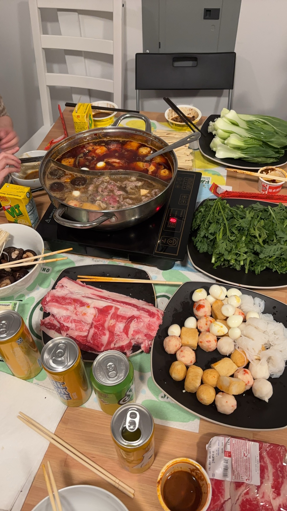
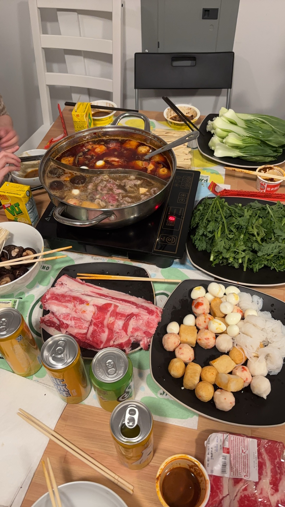
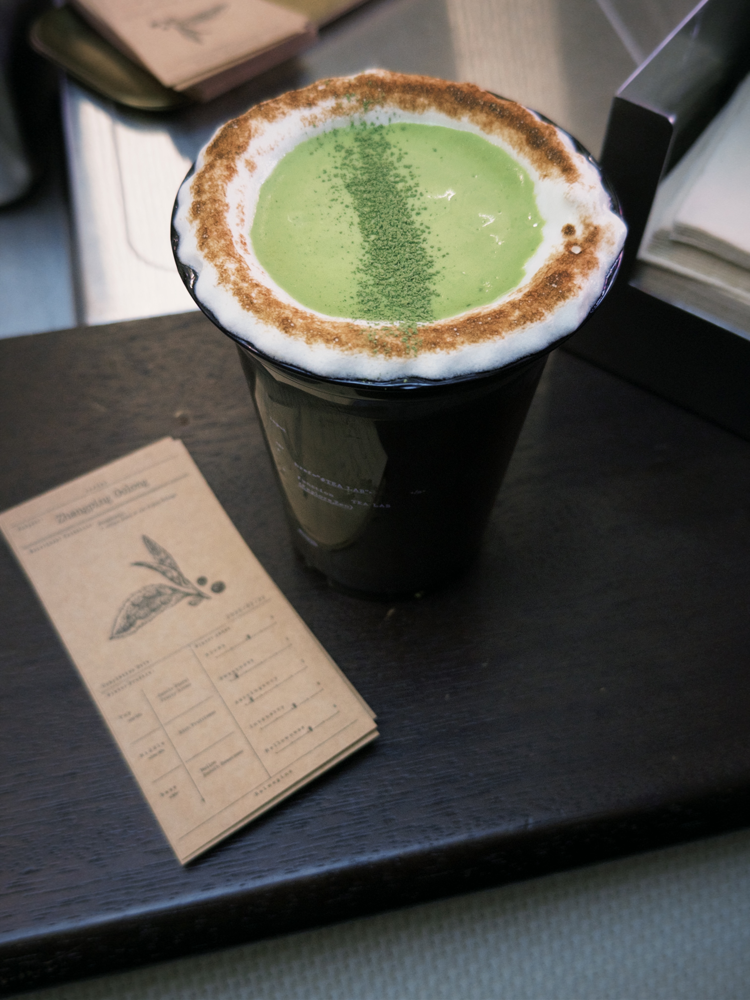
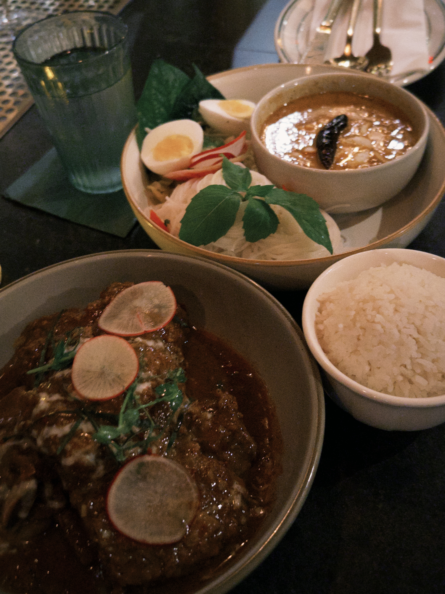
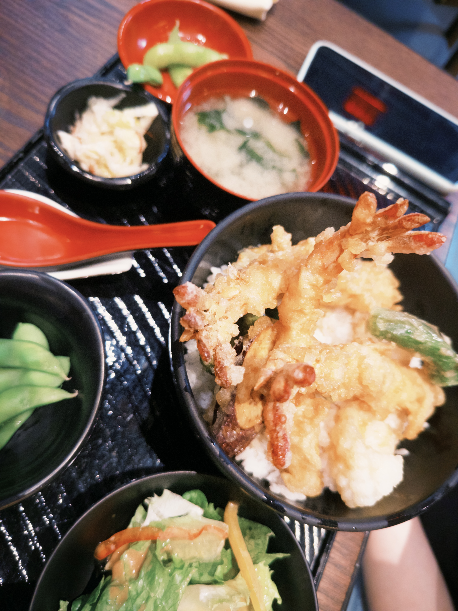
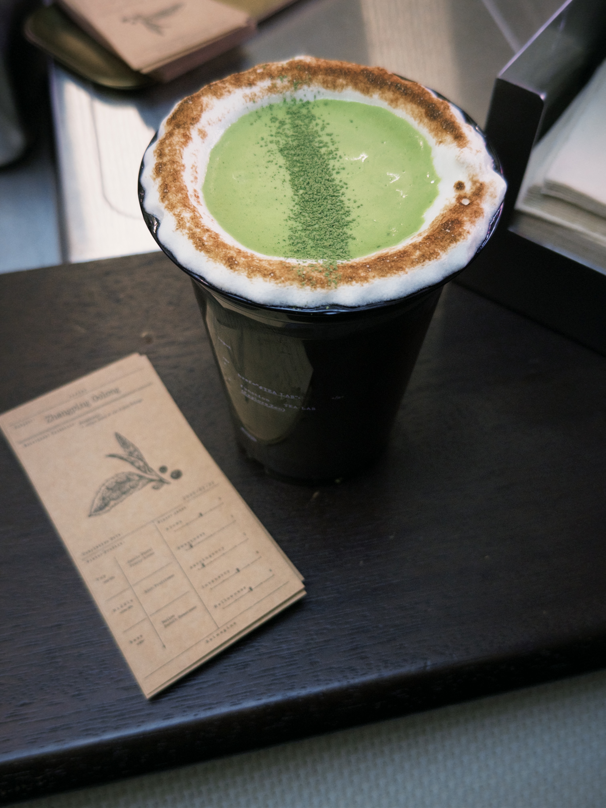
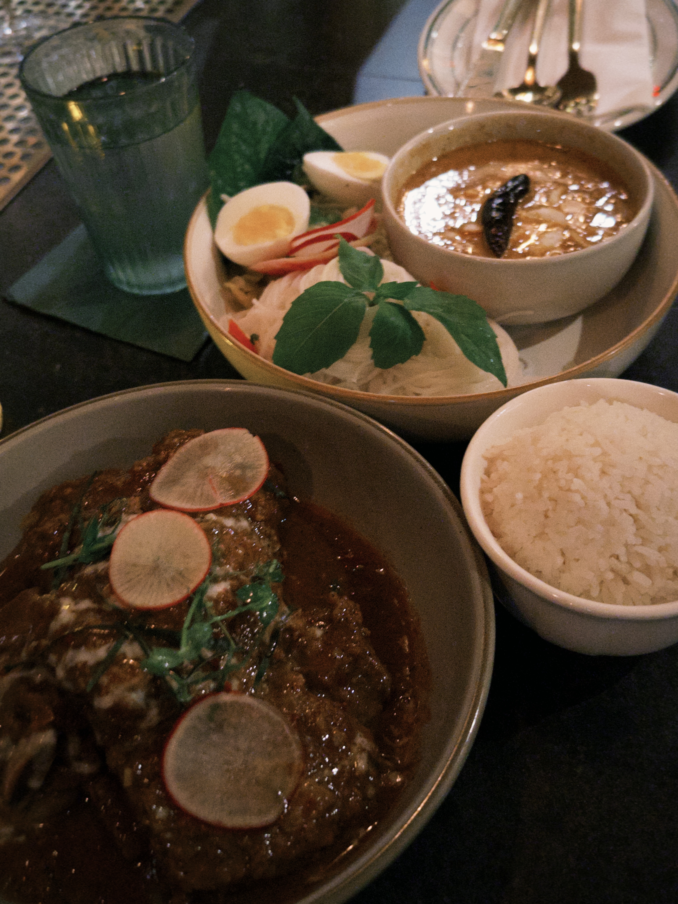
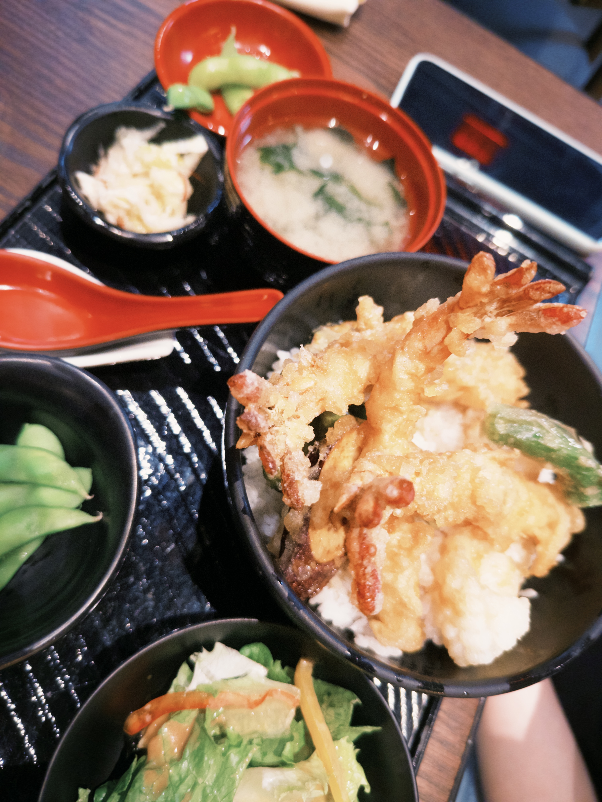
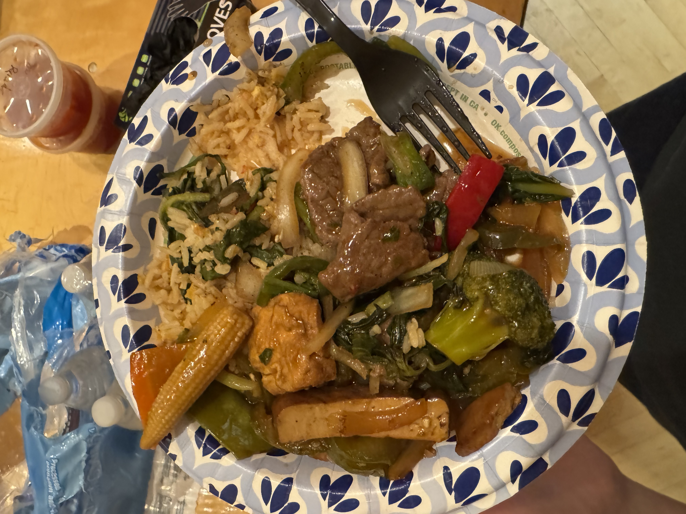
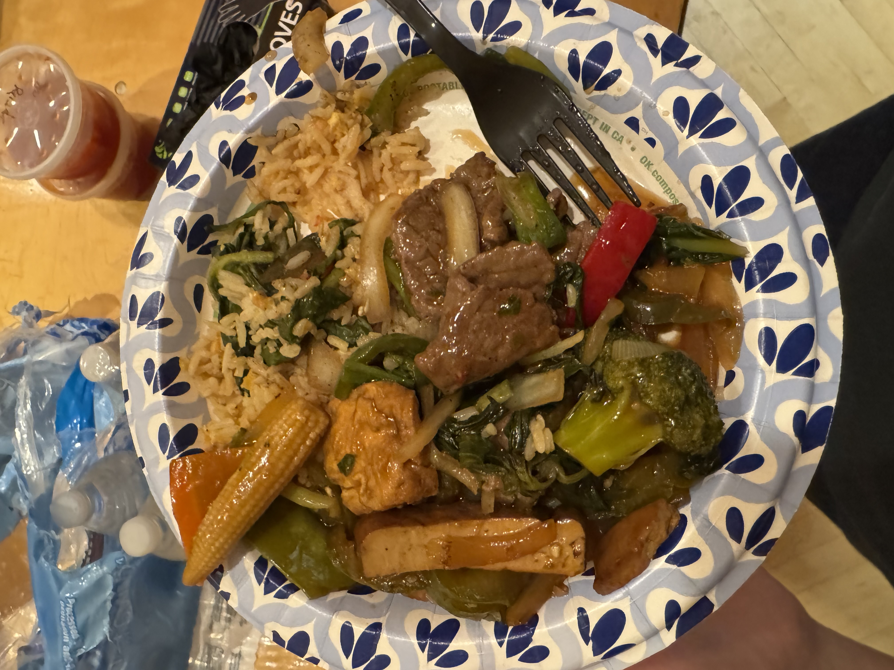

As an international student, one of the most urgent adjustments to studying abroad is the food. While most dishes in the dining hall are edible, they are often not particularly delicious to me.
So I also began exploring different places to eat around campus.
Since my family frequently checks in to see whether I’m living well, I developed the habit of taking a photo of every meal I eat. Over time, I also became curious about my own reactions to these meals, so I started jotting down short notes while reorganizing my data.
In total, I recorded 80 meals over 36 days during my first semester at Princeton, from October 25 to the end of Thanksgiving break on November 30.
Meal Calendar
My data was originally stored in a Google spreadsheet. To make the patterns easier to see, I designed a calendar-style modal view for the meals. I divided each day into five time slots: morning for breakfast, noon for a regular lunch, afternoon for a late lunch, evening for a regular dinner, and night for a late or unusual dinner time.
As the semester went on, though, I realized I rarely had a proper breakfast. On many mornings, I simply grabbed snacks or yogurt before my 9:30 a.m. class. Since these quick snacks didn’t feel like “real meals,” I didn’t photograph them or include them in the dataset.
Scroll horizontally to see what I have for each day!
Click on any image to view the meal details!
Visualizations
Satisfaction Over Time
From October 26 to November 30 (80 meals over 36 days), I rated every meal on a
1–10 scale.
For each day, I calculated the daily average
of all the meals I had. I then smoothed the plot to observe the overall trend.
The trend shows that my satisfaction is increasing
over time. I think this is because as the semester went on, I stopped worrying about
distance and focused more on finding good food, such as checking the dining hall menus
for ramen or stir-fry.
Another factor is that if I’m not hungry, I prefer to skip a meal; but if I am hungry,
everything tastes better lol.
Frequency By Location
I also created a pie chart to show how often I visit each place to eat, in total of 17 different locations. In particular, I grouped all the locations in NYC together for convenience (otherwise each one would appear as an outlier).
Notably, Rocky Dining Hall accounts for about 1/4 of all my meals. This makes sense. Since I live in Rocky, my dorm is only a one-minute walk from the dining hall, whereas going anywhere else takes at least six minutes. I also usually take a nap at noon, so to save time, I often go straight to Rocky for lunch.
The second-largest portion is NYC. The food there is incredibly diverse and delicious. So during my four-day stay in Thanksgiving break, I ate every meal on time and even had snacks and boba every day.
In the pie chart, the “Others” category includes all places I went to only once. So I’ve separated and listed them individually below.
Meal Frequency
I was curious whether I actually have a healthy eating habit here (I assume no). So I quantified how unhealthy I was by plotting my meal frequency.
Afternoon meals and night meals count as “late meals”. The naming comes from Frist—highly recommend :-). They’re not the healthiest option, especially since I sometimes skip regular meal times and just wait for late meal instead.
Then, instead of grouping meals strictly by time of day, I counted them simply by the number of meals, incorporating late meals into the regular meal count. The result was surprising: my eating habits are actually healthier than I thought!
Meal time percentages are calculated over the total dates.
Easter Egg: In my photo series, there are two pictures that aren’t real food but are fun surprises!
Location Explorer
Click any location to revisit what I ate and view my notes.
Select a location from the left to load its photos.
Here’s a map of the places where I’ve had meals on and around the Princeton campus. It’s interesting to see that most of my footsteps cluster around Nassau Street.
I live in Campbell Hall in Rocky, so for convenience, I usually stay in the northern part of campus. Even when I go out to eat, I tend to choose restaurants close to my dorm.
The only meals I had outside campus were in NYC during my Thanksgiving break. I recommend every restaurant I visited! They’re all on Manhattan Island! Some required reservations, but for most of them I simply walked in. There was no wait time, and the food was amazing!
The restaurants in orange are the one's I liked the most. I did have the best Thai foodMitr Thai and the best bobaHeyTea Lab ever near Times Square!
I especially recommend HK Wonton Garden in Chinatown.
It’s only $10 for a truly authentic Hong Kong–style noodle.
The very first sip instantly took me back to my trip to Hong Kong!
And the price is actually even lower than what you'd pay in Hong Kong!
Conclusion
I’ve always been a big foodie, and good meals genuinely make me happy, so it felt natural with this project recording my life exploring food at Princeton.
This was the first time I truly designed a website from scratch, experimenting with layouts, revising visual elements, and thinking carefully about how to create a readable and engaging experience for viewers. Through this process, I learned how essential iteration is. Each week, I could literally see my ideas take shape and the project improve, which was far more fun and rewarding than I ever expected.
I’m especially grateful to my instructor, Tim Szetela, for his detailed feedback and patience in helping me untangle so many confusions along the way. I’m also thankful for my FRS174 classmates, for sharing ideas, offering feedback, and, of course, for all the late-meal runs together during break.

 

 






 
